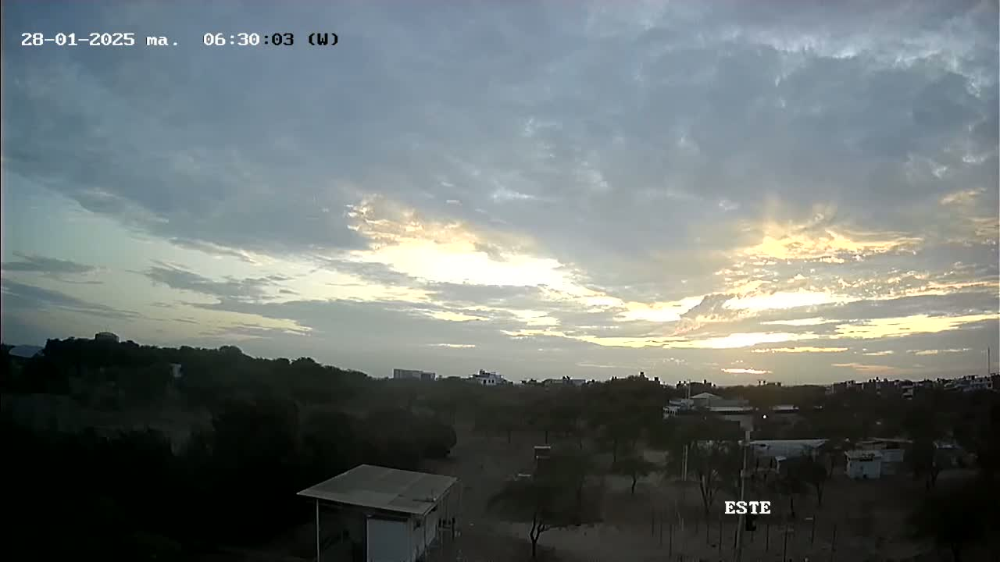
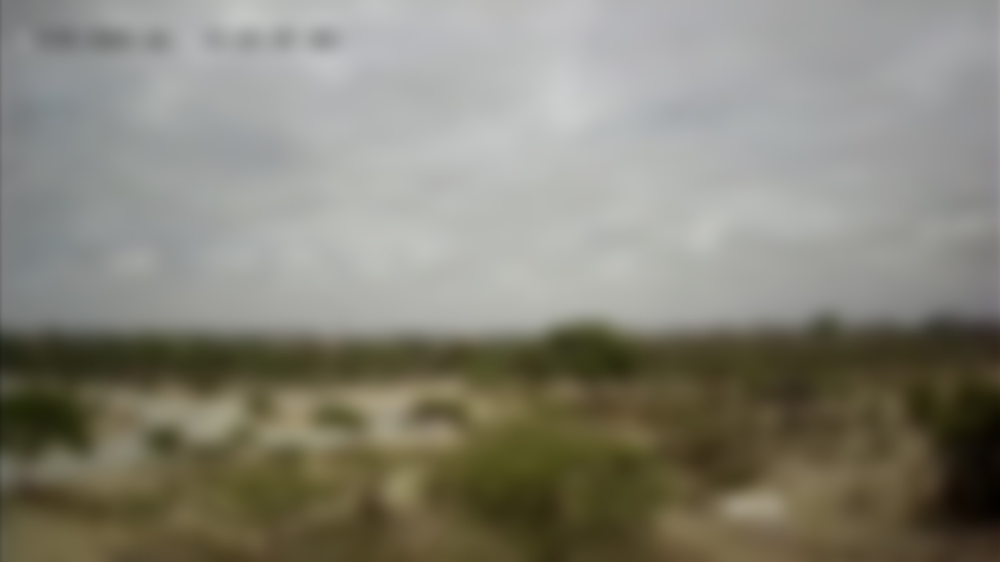

Plataforma de Monitoreo Meteorológico de la Estación Científica Ramón Mugica
Observación de Nubosidad Local
ESTE
OESTE


⚠️ Para acceder a la vista en vivo de la nubosidad, asegúrate de estar conectado a la red UDEP.